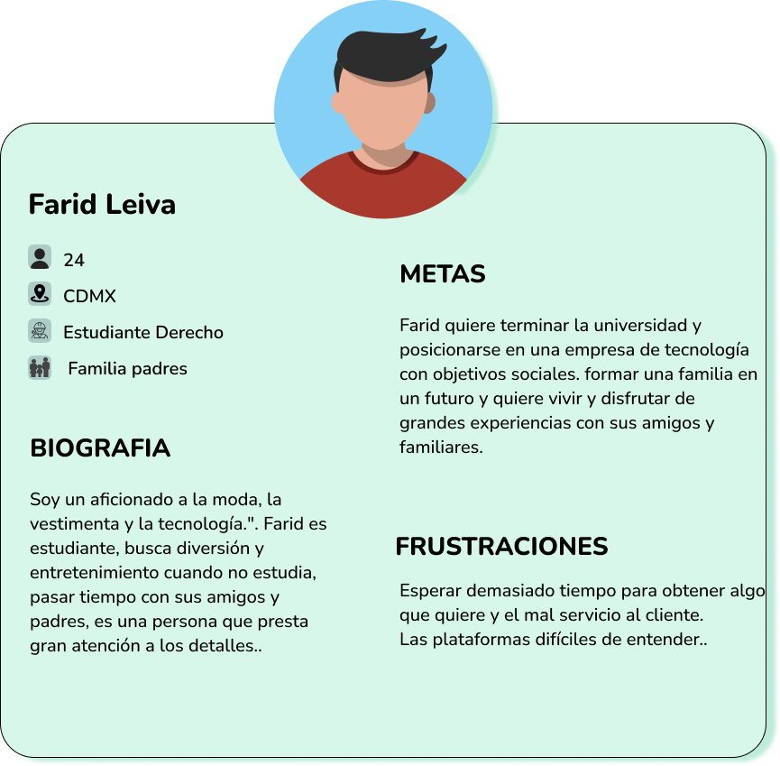
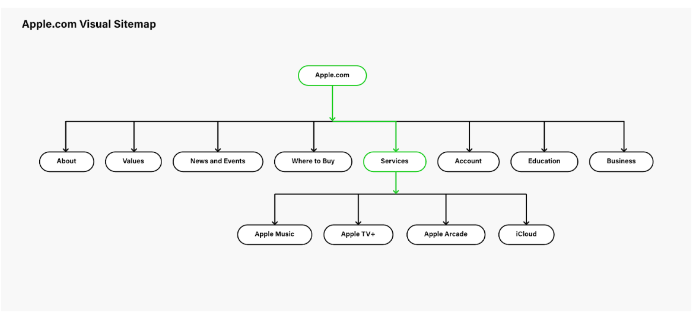
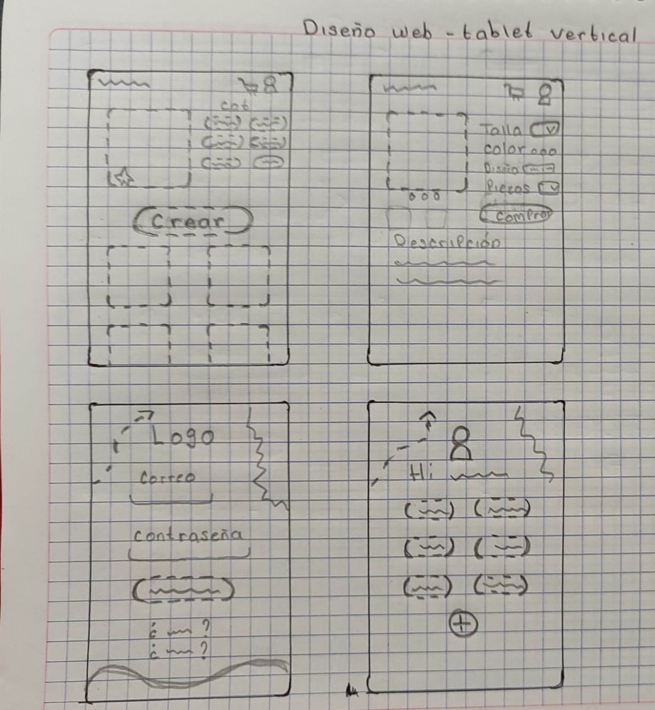
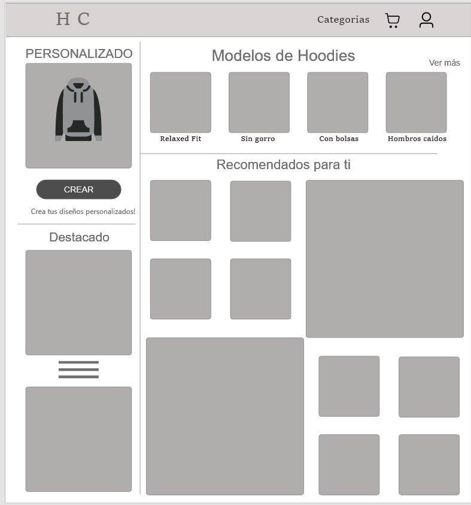
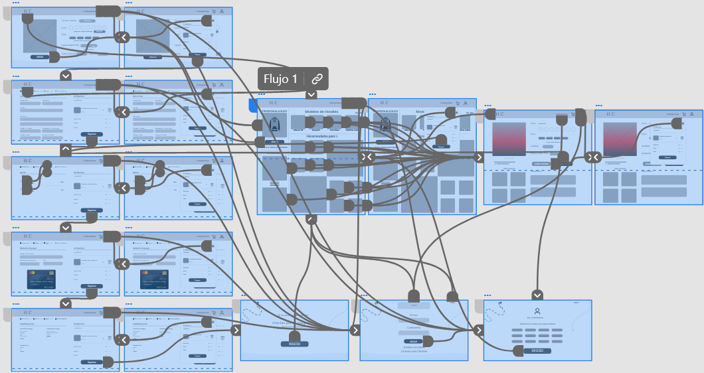
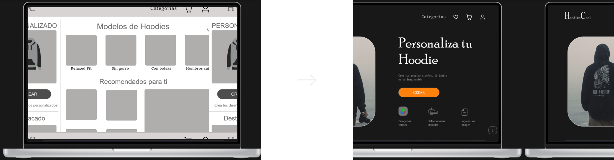
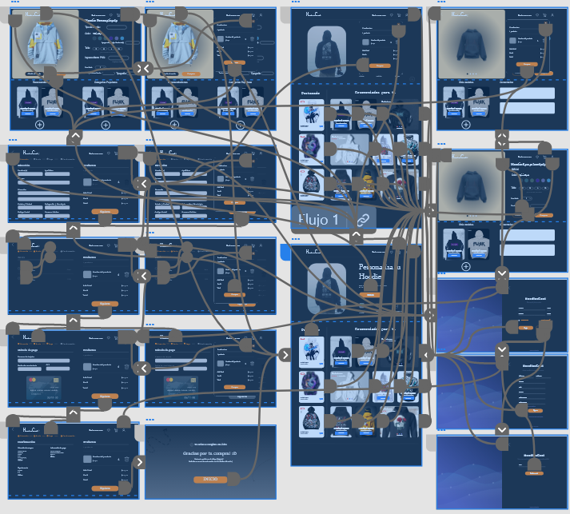

Producto realizado
Producto realizado
Aplicacion para la compra de sudaderas personalizadas en un sitio web de escritorio, adaptando funciones de carrito, flujo de compra, entrega, pago, personalizar sudaderas al gusto del usuario.
 Problematica
Problematica
Se buscaba hacer un sitio web facil de usar y teniendo un diseño claro en las funciones de personalizacion y de flujo de compra, se tuvo que abordar la problematica que tiene la gente al comprar por internet.
 Mi rol en el proyecto
Mi rol en el proyecto
Investigador de U.X y Diseñador de Experiencia de usuario y diseñador de interfaz.
 Duración
Duración
El proyecto inicio en diciembre 2022 y culminaron las pruebas y los diseños en febrero 2023.
 Objetivo
Objetivo
Realizar una aplicación que tenga un flujo de usuario claro y un diseño atractivo, donde se tenga la mayor cantidad de opciones de personalizacion para una Hoodie y una mejor experiencia de usuario.
 Responsabilidades
Responsabilidades
Entrevistas a los usuarios, mapas de empatia, “Personas”, auditorias competitivas, reportes de avances y conclusiones, wireframes, prototipos, sistemas de diseño.

Realice varias entrevistas a usuarios potenciales, principalmente jovenes que al menos han realizado una compra en internet, con el objetivo de comprender cuales son sus sesgos al momento de realizar un pedido y que aspectos de personalizacion consideran importantes, despues se realizaron cuadros de empatia para entender sus necesidades.
Personas
Se crearon nuestras personas ejemplo, las cuales representan nuestros usuarios entrevistados.
Mapa de sitio
Se planifica y se mapea los pasos que puede seguir el usuario navegando por la aplicación, aunque no se tenga un producto digital en este punto del proceso, se debe definir el flujo del usuario.

Wireframes en papel
En el proceso de diseño comenzamos haciendo esquemas de pagina en papel, creando 8 ideas, una por minuto, usando la tecnica Crazy Eight para una aplicación, de esta forma dar ideas de donde acomodar distintos componentes como botones, barras de busqueda, imagenes, etc.

Wireframes digitales
Despues de definir un wireframe en papel despues de varios diseños, utilizamos un diseño final y lo llevamos aADOBE XD para darle vida a un prototipo de baja fidelidad donde apenas definiremos la estructura de la aplicación sin imagenes, color, iconografia y tipografia.

Prototipo de Baja Fidelidad
Para poder hacer unPrototipo interactivo creamos conexiones entre los distintos apartados que queremos que llamen a alguna pantalla con la funcion prototipo deAdobe XD.

Estudio de usabilidad: Parametros
- Tipo de estudio: Estudio de usabilidad moderado.
- Lugar del estudio: CDMX, México | Presencial.
- Participantes: 5 participantes | 3 jovenes | 2 adultos
- duración: 10 - 15 minutos.
Diagrama de afinidad
Finalizadas las pruebas de usabilidad extraemos los comentarios más importantes de los usuarios en cuanto a como perciben el prototipo, que les gustaria y que se les dificulta, como diseñador UX debe tomar en consideracion los comentarios destacados de los usuarios, para eso es el diagrama de afinidad.

Maquetas
Despues de un estudio de usabilidad y tras recopilar comentarios de los usuarios estamos listos para agregar color, tipografia e iconografia a nuestro diseño, además de animaciones y otros factores que complementan el producto.

Sistema de Diseño
Siempre es importante tener un sistema de diseño con los componentes importantes de tipografia y sus escalas y en que casos son utilizadas, iconos comunes y sus variaciones, paleta de colores, botones y componentes importantes, esto con la finalidad de que cuando se actualice en diseño, Adobe XD tiene la facilidad que te genera un sistema de diseño para mantenercoherencia en el diseño.

Prototipo de Alta Fidelidad
Despues de iterar por lo menos 2 veces un estudio de usabilidad se puede decir que la primera version de tu producto esta listo, tienes un prototipo de alta fidelidad interactivo.

¿Que aprendi?
En mi segundo proyecto reforce muchos conocimientos, procesos y sobre todo habilidades de diseño, siendo más conciente y enseñando a mi ojo a saber que colores usar y que queda bien con el entorno :).